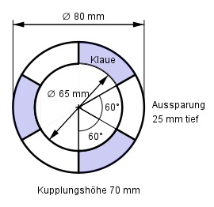

Aufgabe 169 Berechnen Sie die Masse m der Klauenkupplung (Dichte 7,2 kg/dm³).  Volumen des Hohlzylinders ohne Aussparungen: raußen = 80 mm/2 = 40 mm rinnen = 65 mm/2 = 32,5 mm VHohlzylinder = π * (raußen² - rinnen²) * h VHohlzylinder = π * (40² mm² - 32,5² mm²) * 70 mm VHohlzylinder = 119 516 mm³ = 119,5 cm³ Volumen der 3 Aussparungen: 3 * Hohlzylinder * 25 mm VAussparungen = --------------------------- 6 π * (raußen² - rinnen²) VAussparungen = 3 * ------------------------- * 25 mm 6 π * (40² mm² - 32,5² mm²) VAussparungen = 3 * ----------------------------- * 25 mm 6 VAussparungen = 21 342 mm³ = 21,34 cm³ VKupplung = VHohlzylinder - VAussparungen = 119,5 cm³ - 21,34 cm³ VKupplung = 98,16 cm³ m = VKupplung * р р = 7,2 kg/dm³ = 7,2 g/cm³ m = 98,16 cm³ * 7,2 g/cm³ = 706,8 g